TC01
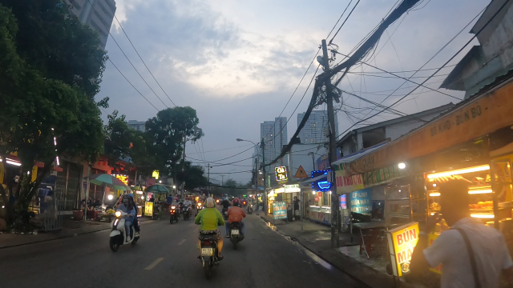
Khu vực trong ảnh có lưu ý gì dành cho người đi bộ?
Nhãn tham chiếu: Pedestrian_crossing_zoneĐáp án chuẩn: Phía trước có khu vực dành cho người đi bộ qua đường. Hãy giảm tốc độ, quan sát và nhường người đi bộ khi cần.

Khu vực trong ảnh có lưu ý gì dành cho người đi bộ?
Nhãn tham chiếu: Pedestrian_crossing_zoneĐáp án chuẩn: Phía trước có khu vực dành cho người đi bộ qua đường. Hãy giảm tốc độ, quan sát và nhường người đi bộ khi cần.
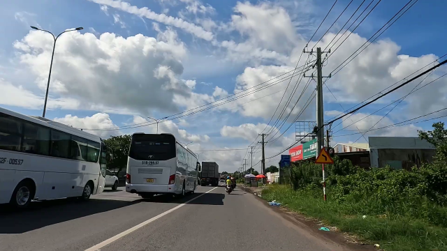
Phía trước có nguy cơ gì và người lái xe nên chú ý điều gì?
Nhãn tham chiếu: Dangerous_curve_leftĐáp án chuẩn: Phía trước có khúc cua nguy hiểm sang trái. Hãy giảm tốc độ và đi đúng phần đường.
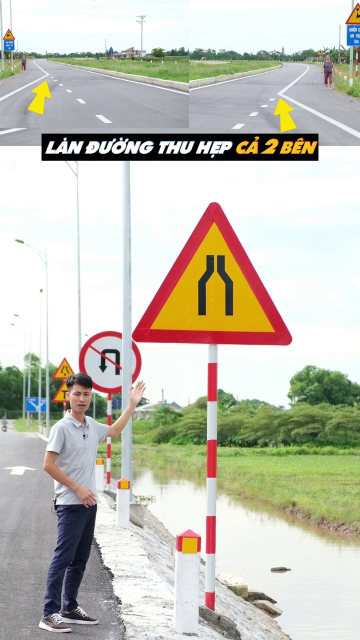
Đoạn đường phía trước thay đổi như thế nào và người lái xe cần lưu ý gì?
Nhãn tham chiếu: Road_narrowsĐáp án chuẩn: Phía trước mặt đường bị thu hẹp. Hãy giảm tốc độ, chú ý xe đi ngược chiều và giữ khoảng cách an toàn.
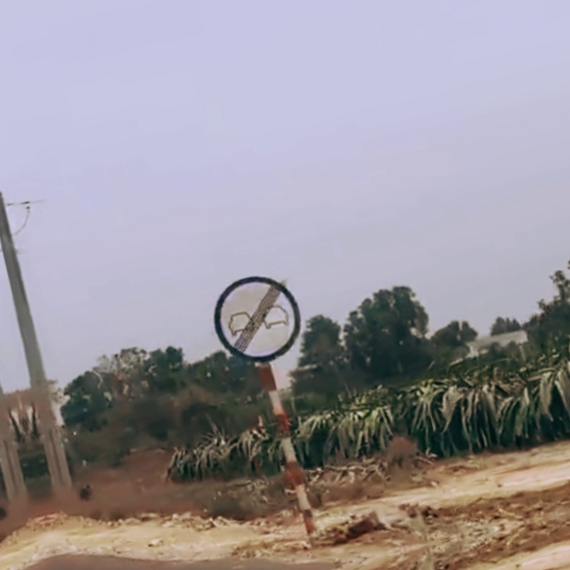
Từ vị trí có biển này, quy định cấm vượt còn tiếp tục áp dụng không?
Nhãn tham chiếu: End_no_overtakingĐáp án chuẩn: Không. Biển báo hết cấm vượt cho biết lệnh cấm vượt trước đó kết thúc tại vị trí này; vẫn phải tuân thủ các hạn chế khác nếu có.
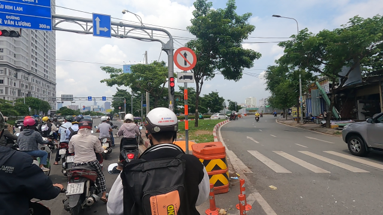
Tại vị trí này, xe có được đi thẳng không?
Nhãn tham chiếu: No_straight_aheadĐáp án chuẩn: Không. Biển cấm xe đi thẳng tại vị trí này.
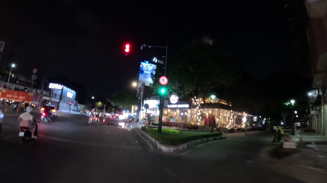
Tại vị trí này, xe có được quay đầu không?
Nhãn tham chiếu: No_U_turnĐáp án chuẩn: Không. Biển cấm xe quay đầu tại vị trí này.
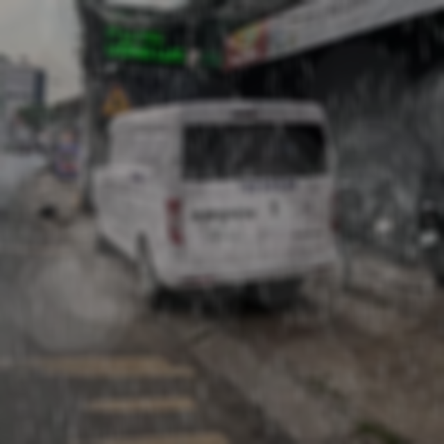
Khi đến nút giao phía trước, người lái xe cần nhường đường cho hướng nào?
Nhãn tham chiếu: Intersection_with_non_priority_road_leftĐáp án chuẩn: Có đường nhánh không ưu tiên nối vào từ bên trái. Nếu bạn đang đi trên đường ưu tiên, xe từ nhánh bên trái phải nhường đường; hãy quan sát và xử lý theo tình hình thực tế tại nút giao.
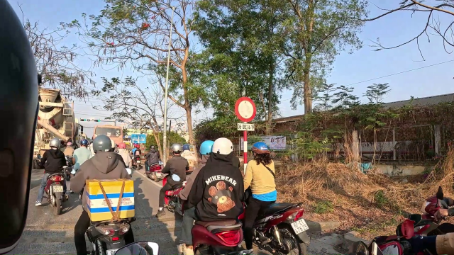
Xe có được đi tiếp vào đoạn đường phía trước không?
Nhãn tham chiếu: Road_closedĐáp án chuẩn: Không. Biển báo đường cấm cho biết xe không được đi vào đoạn đường phía trước.
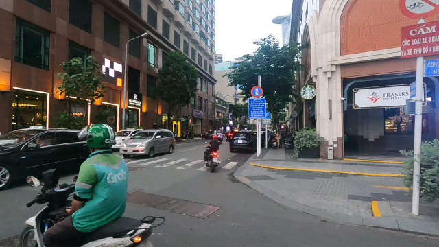
Biển báo trong ảnh hạn chế việc đỗ xe vào những ngày nào?
Nhãn tham chiếu: No_parking_even_daysĐáp án chuẩn: Biển cấm đỗ xe vào các ngày chẵn trong tháng.
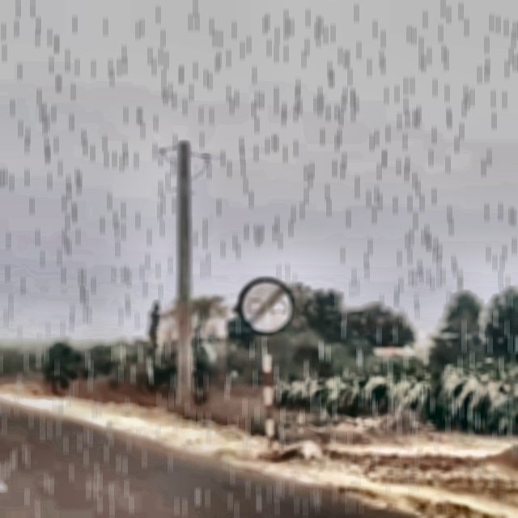
Từ vị trí có biển này, quy định cấm vượt còn tiếp tục áp dụng không?
Nhãn tham chiếu: End_no_overtakingĐáp án chuẩn: Không. Biển báo hết cấm vượt cho biết lệnh cấm vượt trước đó kết thúc tại vị trí này; vẫn phải tuân thủ các hạn chế khác nếu có.
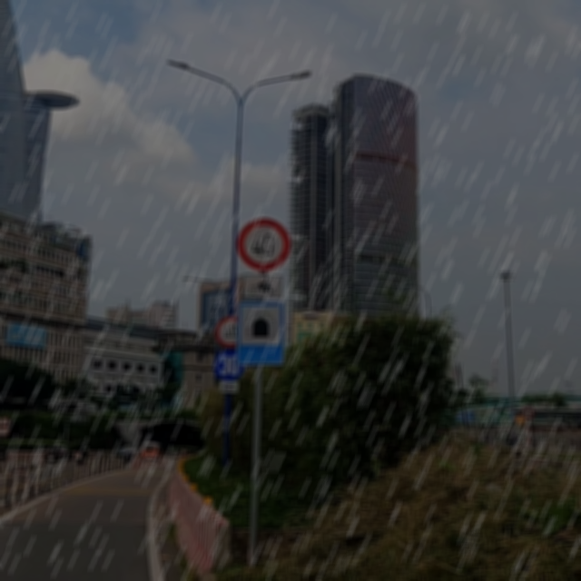
Tốc độ tối đa được phép theo biển báo trong ảnh là bao nhiêu?
Nhãn tham chiếu: Speed_limit_40, Min_speed_limit_30Đáp án chuẩn: Tốc độ tối đa là 40 km/h. Biển phía dưới chỉ tốc độ tối thiểu 30 km/h, không làm thay đổi mức tối đa 40 km/h.
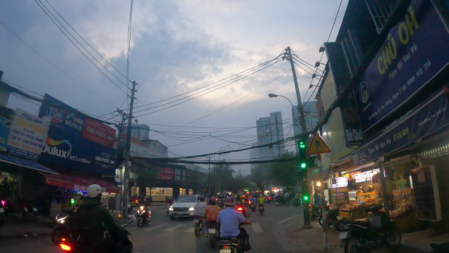
Người lái xe cần chú ý gì khi đến khu vực phía trước?
Nhãn tham chiếu: Pedestrian_crossingĐáp án chuẩn: Phía trước có chỗ người đi bộ qua đường. Hãy giảm tốc độ, quan sát và nhường người đi bộ khi cần.
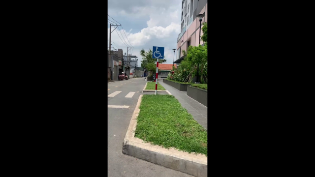
Biển báo cho biết xe đang đi vào khu vực nào?
Nhãn tham chiếu: Residential_areaĐáp án chuẩn: Biển báo cho biết xe đang đi vào khu đông dân cư. Hãy tuân thủ tốc độ và các quy định áp dụng trong khu vực này.
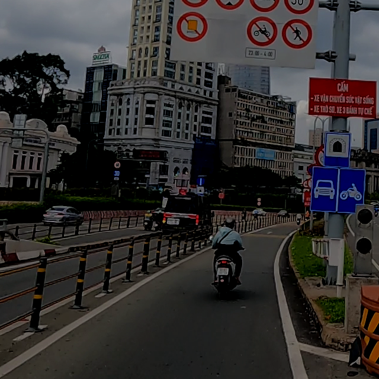
Xe mô tô có được đi vào tuyến đường này không?
Nhãn tham chiếu: No_motorcycles, No_vehicles_carrying_dangerous_goods, No_pedestriansĐáp án chuẩn: Không. Biển cấm xe mô tô đi vào tuyến đường này.
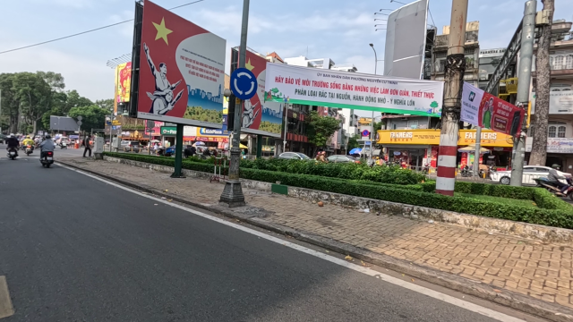
Khi gặp biển báo này, người lái xe cần đi theo dạng nút giao nào?
Nhãn tham chiếu: RoundaboutĐáp án chuẩn: Phía trước là nút giao vòng xuyến. Khi đi qua, đi theo chiều mũi tên và tuân thủ biển báo, vạch kẻ đường tại nút giao.
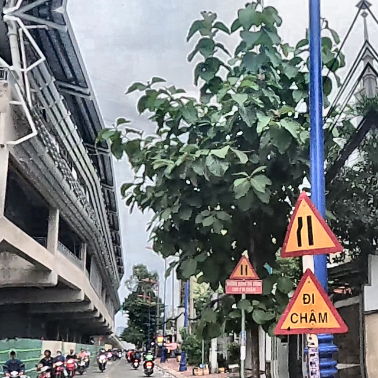
Phần đường bị thu hẹp ở phía nào?
Nhãn tham chiếu: Road_narrows_left, Two_way_trafficĐáp án chuẩn: Phần đường bị thu hẹp ở bên trái.
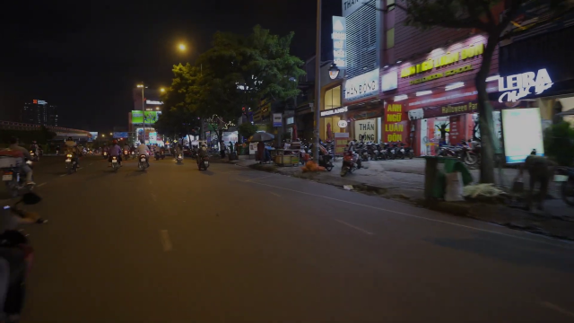
Địa điểm hoặc dịch vụ giao thông nào được báo hiệu trong ảnh?
Nhãn tham chiếu: Bus_stopĐáp án chuẩn: Biển báo điểm dừng xe buýt.
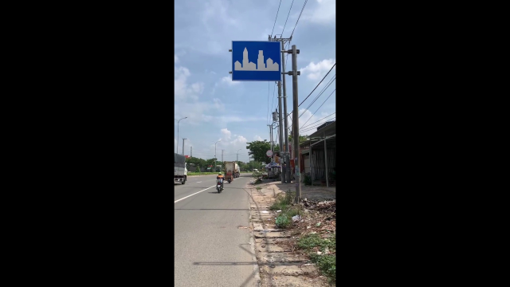
Biển báo cho biết xe đang đi vào khu vực nào?
Nhãn tham chiếu: Residential_areaĐáp án chuẩn: Biển báo cho biết xe đang đi vào khu đông dân cư. Hãy tuân thủ tốc độ và các quy định áp dụng trong khu vực này.
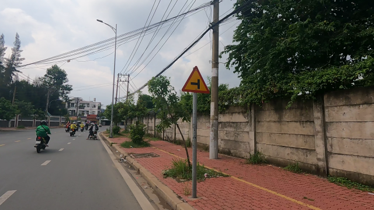
Phía trước là nút giao dạng nào và nhánh đường rẽ về phía nào?
Nhãn tham chiếu: T_junction_leftĐáp án chuẩn: Phía trước là nút giao hình chữ T, nhánh đường nhập từ bên trái.
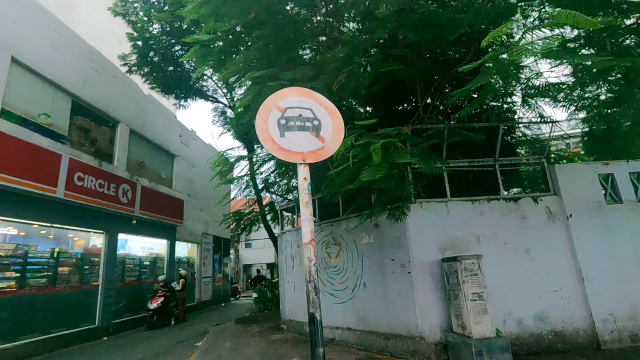
Ô tô có được đi vào tuyến đường này không?
Nhãn tham chiếu: No_carsĐáp án chuẩn: Không. Biển cấm ô tô đi vào tuyến đường này.